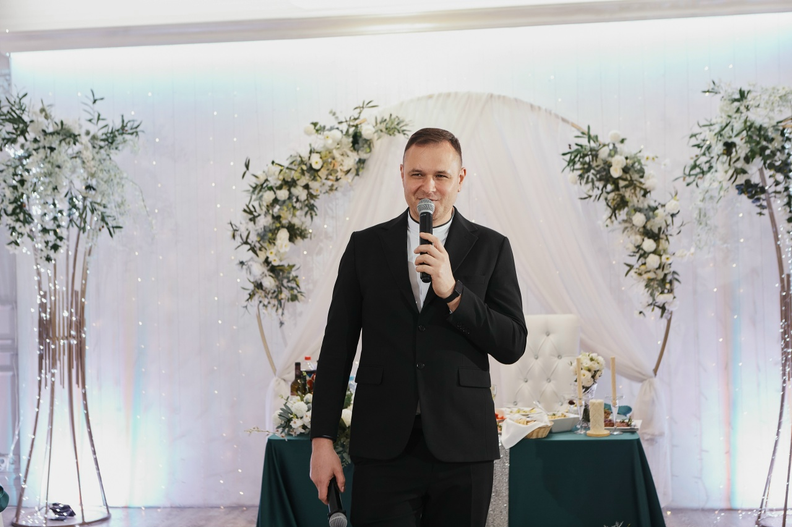
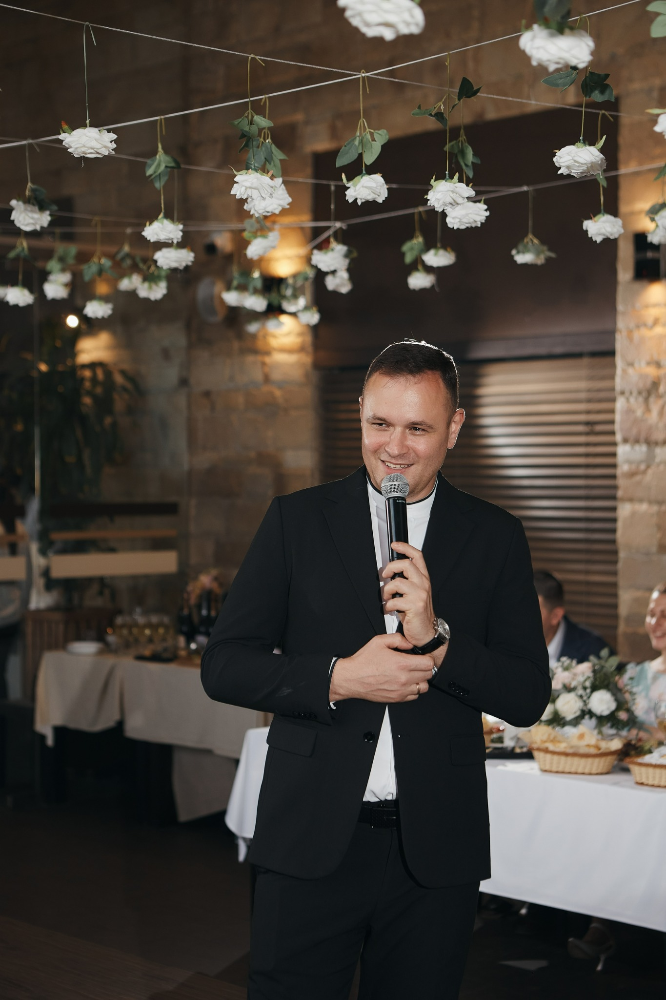
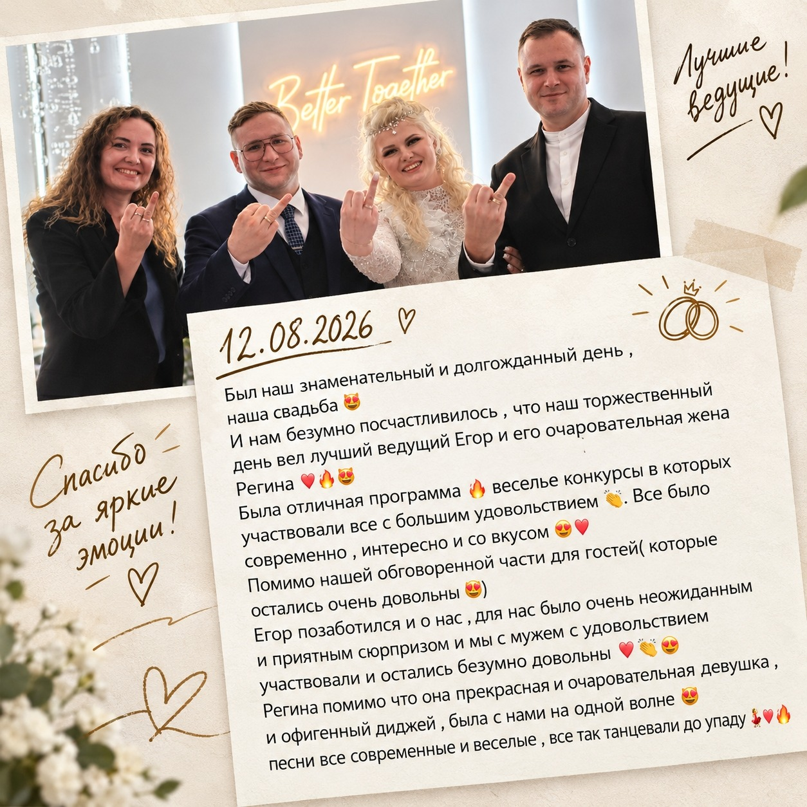
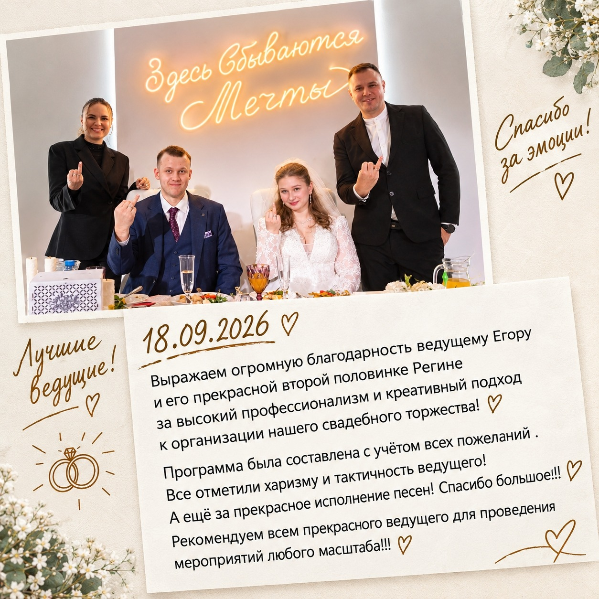
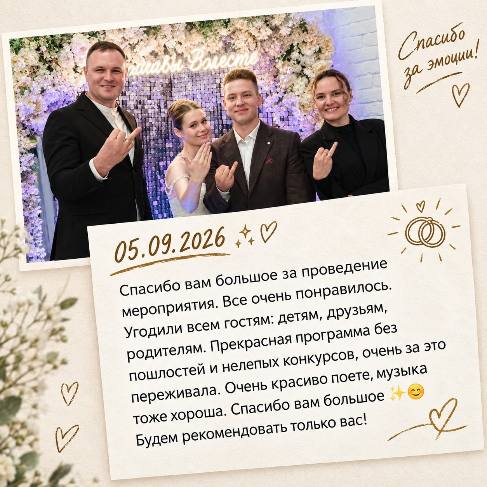
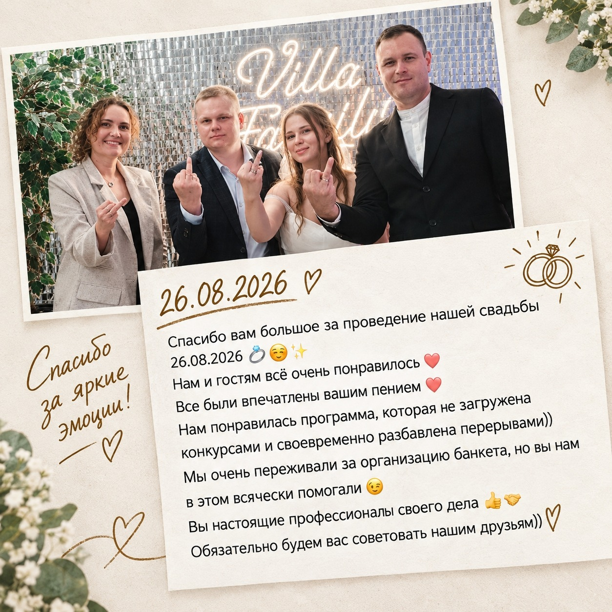
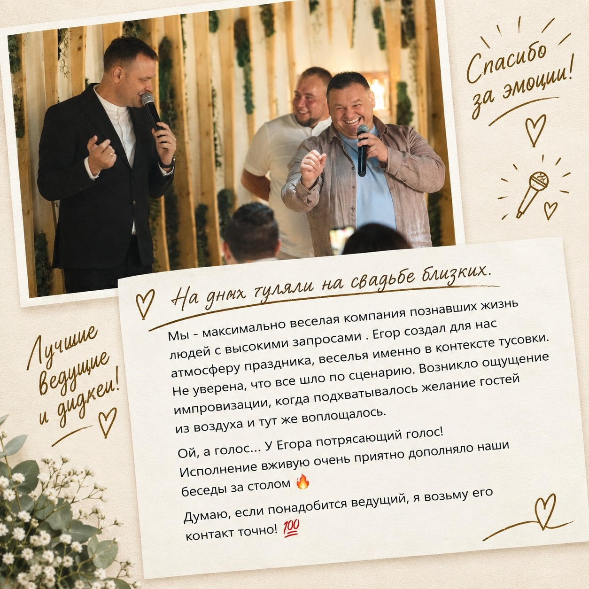
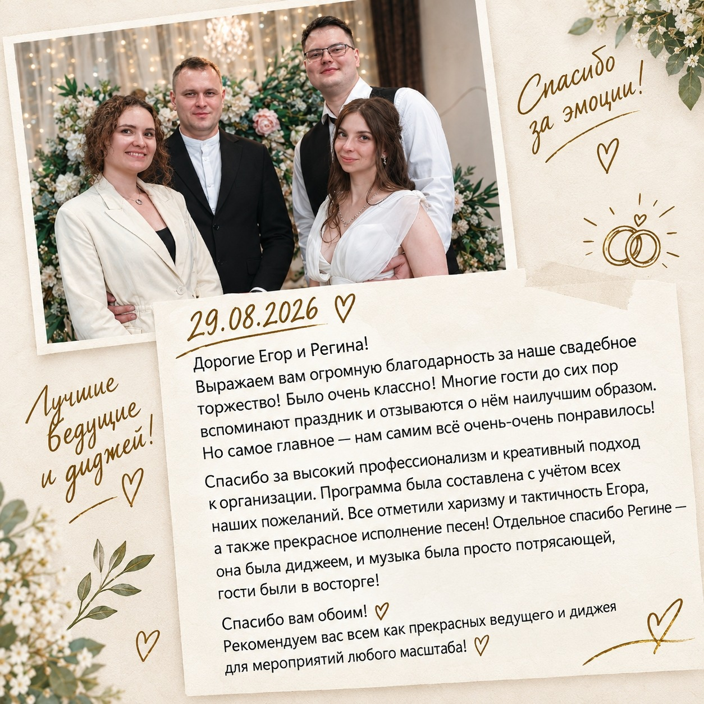
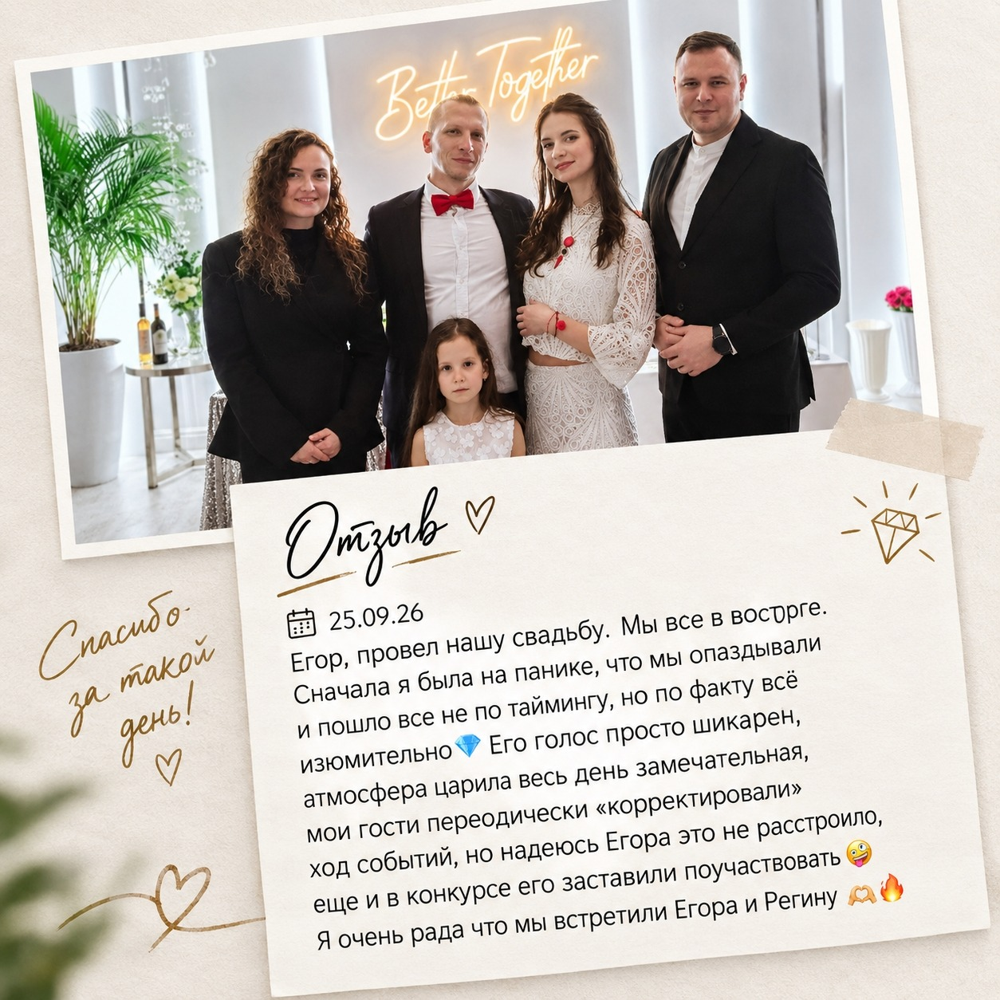
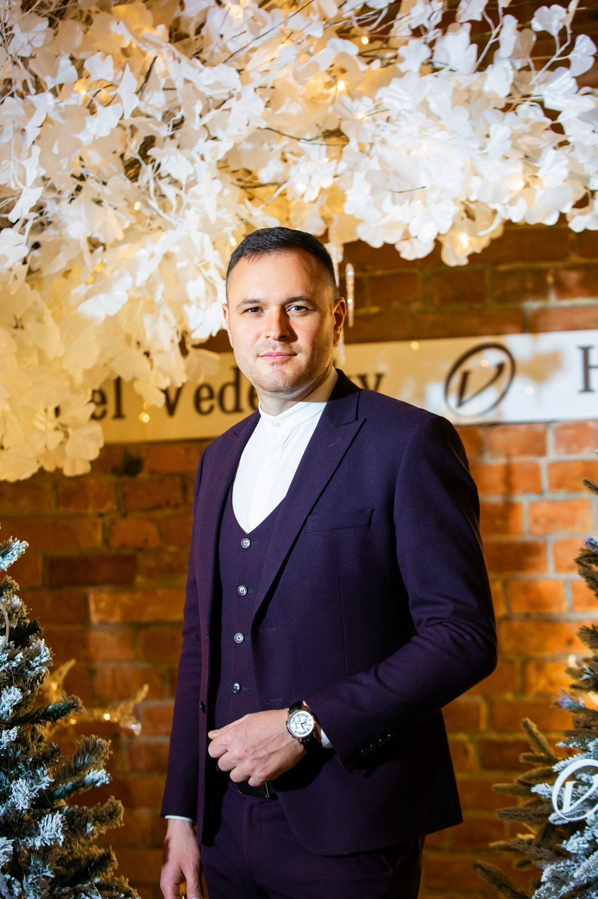

Без шаблонов
Сценарий и интерактивы подстраиваются под вашу компанию, историю и настроение.

ВЕДУЩИЙ МЕРОПРИЯТИЙ
Создаю живую атмосферу, в которой хочется смеяться, танцевать и вспоминать этот день ещё много лет.
ОБО МНЕ
Более 15 лет создаю атмосферу праздника.
Провёл и организовал более 600 мероприятий — от камерных семейных праздников до больших городских событий. Чувствую настроение гостей, легко нахожу подход к разной аудитории и создаю атмосферу, в которой комфортно каждому.
Чемпион Краснодарской лиги КВН, лауреат международных фестивалей и конкурсов при поддержке Правительства РФ, участник игр по импровизации от ТНТ. Играл главные роли в спектаклях и выступал на разогреве у IOWA, Марсель, Игоря Корнелюка и «Братьев Грим».
Пишу и исполняю собственные песни — более 25 авторских композиций уже стали частью моего творческого пути.

ВИДЕО
Живые эмоции, атмосфера и настоящая работа с гостями.
ПОЧЕМУ Я
Сценарий и интерактивы подстраиваются под вашу компанию, историю и настроение.
Никого не заставляю участвовать. Гости включаются сами, потому что им действительно интересно.
Ведущий не перетягивает внимание на себя. Главные герои праздника — вы и ваши гости.
Живое исполнение популярных песен — прекрасное дополнение к празднику, которое создаёт особенную атмосферу и помогает сделать вечер ещё ярче.
ФОРМАТЫ
Живой и душевный праздник, созданный вокруг вашей истории, характеров и гостей.
Тёплый, современный вечер без банальных конкурсов и обязательных интерактивов.
Обсудить свадьбу →Динамичная программа, юмор и интерактив, которые объединяют коллектив и создают атмосферу настоящего праздника.
Живой праздник для команды с учётом характера компании.
Тёплый праздник с близкими людьми, яркими эмоциями, музыкой и моментами, которые хочется запомнить.
История человека, его семьи и друзей превращается в настоящий праздник.
Живое исполнение популярных песен, энергия сцены и общение с публикой — программа, которая создаёт настроение и объединяет зал.
ОТЗЫВЫ







Более 250 отзывов от наших клиентов — в группе ВКонтакте.
Смотреть все отзывы ВКонтактеФОТОГАЛЕРЕЯ
Живые моменты со свадеб, корпоративов, юбилеев и концертных программ.
АТМОСФЕРА
Атмосферу праздника сложно передать словами — её лучше увидеть в живых моментах с мероприятий.

ВИДЕОГАЛЕРЕЯ
Эмоции, энергия и настоящая атмосфера мероприятий.
РАССЧИТАТЬ СТОИМОСТЬ
Оставьте несколько деталей — я свяжусь с вами и предложу подходящий формат.
FAQ
В программе нет старых и неловких конкурсов вроде «карандашика» и «бутылочки». Я делаю современную программу, а все конкурсы заранее обсуждаю с заказчиками, чтобы мы точно понимали, что будет происходить на празднике и уверенно работали по согласованному сценарию.
Да. Если вам важно официально зафиксировать все договорённости и чувствовать себя уверенно, мы заключаем договор.
Обычно я встречаюсь с заказчиками лично — знакомимся, обсуждаем детали и формат мероприятия. Но если удобнее, всё можно обсудить по телефону или видеосвязи.
Да. Мы вместе обсуждаем программу, вносим необходимые правки и создаём готовый сценарий с учётом ваших пожеланий, характера гостей и формата праздника.
Да. Я работаю в паре с DJ, который понимает меня с полувзгляда. Во время мероприятия мы также принимаем от гостей музыкальные пожелания и ставим любимые танцевальные композиции.
Чем раньше, тем лучше — особенно если речь идёт о популярных свадебных датах. Так у нас будет больше возможностей спокойно подготовить программу именно под вас.
СВЯЗЬ
Расскажите о вашем мероприятии — обсудим дату, формат и настроение праздника.
Забронировать дату